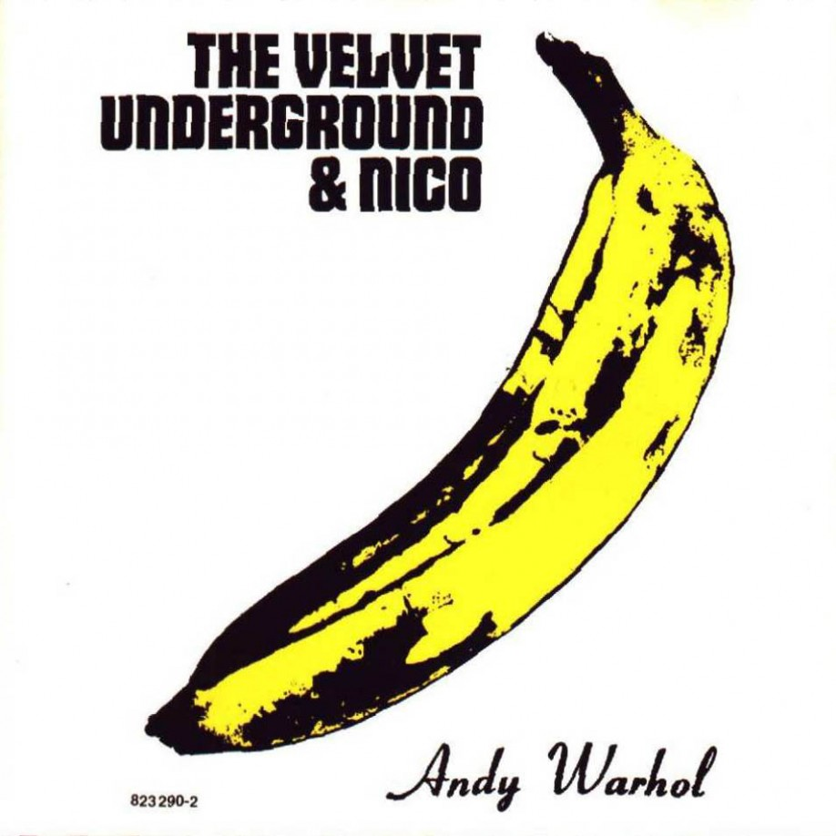

The Velvet Underground es el tercer álbum del grupo de música The Velvet Underground, y el primero editado tras la expulsión del grupo de John Cale, enemistado entonces con Lou Reed.
En agosto de 1968, Cale es despedido sin explicaciones por un Lou Reed que desea serenar el estilo del grupo y evolucionar hacia terrenos en apariencia menos peligrosos. A pesar de la conexión Warhol, sus discos no se venden. El enfrentamiento entre las personalidades de Reed y Cale, que había sido la identidad artística misma del grupo y su fuerza motriz, desaparece. Con Cale se van su chirriante viola y las aristas de radicalismo sonoro que les habían empujado hacia universos inexplorados. Su sustituto, Doug Yule, se amoldará a la personalidad del líder y servirá de nexo con la normalidad durante la segunda etapa del grupo, puntuada por elepés de sonoridad más simple y temática más espiritual.
